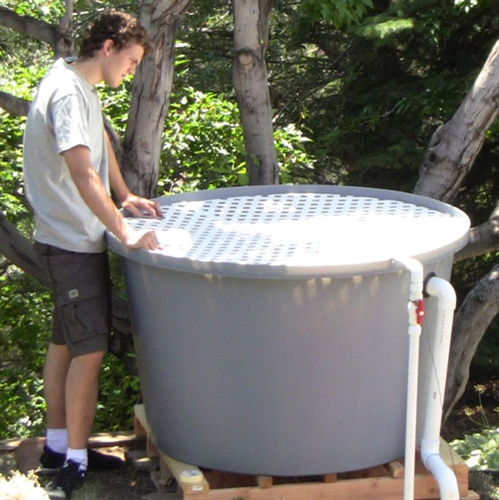

Para a montagem de um sistema de aquaponia eficiente, o planejamento da estrutura de sustentação é vital. O segredo para um fluxo contínuo e sem gastos excessivos de energia reside no uso estratégico do desnível e da gravidade.
O Conceito de Níveis
A circulação ocorre porque a gravidade faz com que a água sempre procure o ponto mais baixo. Em um sistema bem projetado, a água "desce" por todos os estágios de filtragem antes de ser bombeada de volta ao topo.
 Visualizando a hierarquia de altura entre tanques, filtros e camas.
Visualizando a hierarquia de altura entre tanques, filtros e camas.
1. O Ponto de Partida: Tanque de Peixes
O tanque de peixes deve ter sua saída de água preferencialmente pela parte superior. Isso garante que, em caso de falha nas conexões externas, o reservatório não esvazie completamente.
DICA DE SEGURANÇA: Evite saídas de água pelo fundo do tanque. Um vazamento acidental em uma flange inferior pode drenar todo o sistema e ser fatal para seus peixes em poucos minutos.

Configuração de segurança para o reservatório principal.2. Estágios de Filtragem
O filtro ciclone deve estar posicionado em um nível ligeiramente inferior ao do tanque de peixes. Essa diferença de altura cria a pressão necessária para que a água flua naturalmente para o filtro.
Deste ponto, a água segue para o filtro biológico, que ocupa o nível mais baixo de toda a estrutura hidráulica. É aqui que instalamos o "coração" do sistema.
Bombas de Alta Performance para Retorno
Como o sistema depende do desnível, você precisa de uma bomba confiável para vencer a altura e levar a água de volta às plantas:


3. O Retorno: Camas de Cultivo
A bomba, situada no filtro biológico, impulsiona a água para o nível mais alto: as camas de cultivo. Após nutrir as plantas, a água limpa escoa por gravidade de volta para o nível intermediário, retornando ao tanque de peixes.
 A água percorrendo o caminho da limpeza antes de retornar aos peixes.
A água percorrendo o caminho da limpeza antes de retornar aos peixes.
Dominar o desnível é garantir que sua Aquaponia funcione como uma replicação da natureza, onde a energia é usada apenas para vencer a altura, e a física cuida de todo o resto.
Para complementar a saúde desse ciclo, muitos produtores utilizam as Lemnas como biofiltros naturais e alimento suplementar.